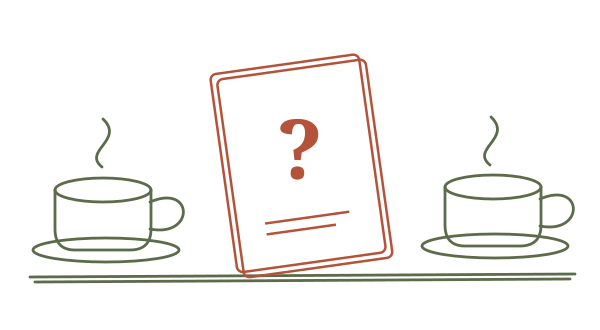
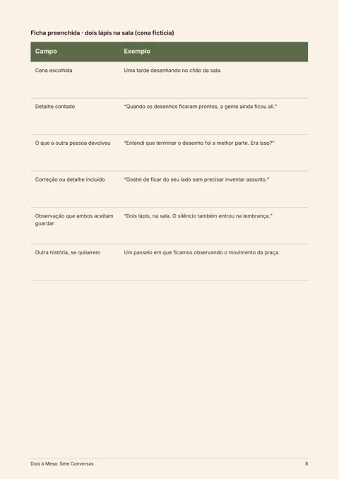

Sete dias de conversas guiadas, uma atividade por vez
Um caderno para casais que querem ouvir lembranças, agradecer pequenos gestos e escolher o que gostariam de fazer juntos.
Quero o caderno por R$ 49,90
7 conversas · 35 perguntas · 7 folhas
Para quem é e o que esperar
Para quem é. Casais adultos que estão juntos e querem reservar tempo para conversar sobre o que lembram, apreciam ou têm curiosidade de experimentar a dois.
Para quem não é. Quem procura terapia, orientação clínica ou aconselhamento sobre permanecer em uma relação.
Como funciona
Escuta, Pedido e Combinado. Uma pessoa conta, a outra devolve o que entendeu. Se surgir uma ideia, ela pode virar um convite concreto. O caderno dá espaço para registrar um combinado aceito pelos dois, deixar a resposta em aberto ou pausar.
O que vem dentro
- Caderno com um check-in de três perguntas e sete dias com uma conversa ou atividade guiada por dia.
- 35 perguntas opcionais para ir além, cinco por dia, sobre lembranças, escuta, convites, apreço e planos.
- Sete folhas de registro em branco, uma por dia, e duas fichas preenchidas com cenas fictícias de convivência.
- Doze ideias de momentos a dois que podem ser feitos sem gastar ou com o que já se tem em casa.
- Página O que queremos guardar, com espaço para três registros da semana.
- Bônus Retomar sem Pressa, com três frases para abrir, pausar ou voltar a uma conversa e uma folha de retomada.
Leia uma amostra
Dia 2 · Ouvir e conferir
- Que detalhe de um dia comum fez você querer guardar aquela lembrança?
- Como você gosta que eu mostre que estou prestando atenção?
- Que parte de uma história você prefere contar no seu próprio ritmo?
- Que lembrança nossa você gostaria de ouvir da minha perspectiva?
- Quando alguém escuta do jeito que você gosta, o que essa pessoa faz?
Ficha preenchida · dois lápis na sala (cena fictícia)
| Campo | Exemplo |
|---|---|
| Cena escolhida | Uma tarde desenhando no chão da sala. |
| Detalhe contado | “Quando os desenhos ficaram prontos, a gente ainda ficou ali.” |
| O que a outra pessoa devolveu | “Entendi que terminar o desenho foi a melhor parte. Era isso?” |
| Correção ou detalhe incluído | “Gostei de ficar do seu lado sem precisar inventar assunto.” |
| Observação que ambos aceitam guardar | “Dois lápis, na sala. O silêncio também entrou na lembrança.” |
| Outra história, se quiserem | Um passeio em que ficamos observando o movimento da praça. |

Oferta e preço
Dois à Mesa: Sete Conversas — R$ 49,90 em pagamento único. Inclui o caderno em PDF e as folhas em Markdown editável.
Este caderno é material educativo. Não é terapia e não substitui atendimento profissional.
Quero o caderno por R$ 49,90Demonstração local. Não há cobrança nesta página.
Sete dias para arrependimento
Se desistir da compra online, solicite o reembolso em até sete dias, pelo canal de suporte indicado na confirmação da compra. O pedido independe de uso do material.
Perguntas frequentes
Em que formato vem o caderno?
Em PDF. As folhas de registro e de fechamento também vêm em Markdown para copiar ou editar.
Como recebo os arquivos?
O link para baixar os arquivos é disponibilizado após a confirmação da compra.
Preciso pagar alguma ferramenta ou comprar materiais?
Não. Papel e caneta bastam para registrar. As ideias de atividades foram pensadas para usar o que já está disponível.
Podemos escolher que perguntas responder?
Sim. As 35 perguntas para ir além são opcionais. Qualquer pessoa pode pular uma pergunta, escolher guardar uma resposta para si ou parar.
Os dias precisam ser seguidos?
As sete atividades vêm em sequência e podem ser espaçadas conforme a disponibilidade de ambos.
É terapia de casal?
É um material educativo e não substitui atendimento profissional.
Posso solicitar reembolso?
Sim. Em até sete dias da compra online, pelo canal de suporte indicado na confirmação. O pedido independe de uso do material.
Escolham uma lembrança para começar
Uma cena pequena já rende a primeira atividade. Abram o caderno, escolham uma pergunta e guardem só o que os dois quiserem registrar.
Quero o caderno por R$ 49,90